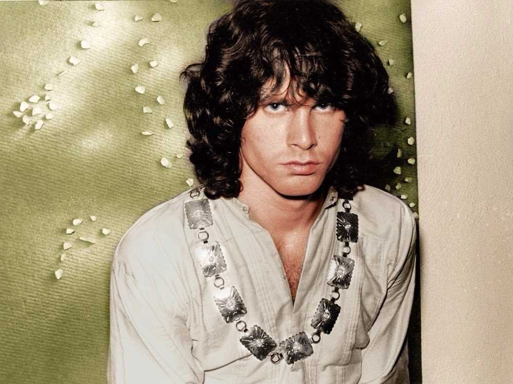

December 8, 1943 — July 3, 1971
"No one here gets out alive."
— Jim Morrison
James Douglas Morrison was born on December 8, 1943, in Melbourne, Florida, the son of a U.S. Navy Admiral. His childhood was defined by frequent moves across military bases. He was a brilliant, voracious reader who devoured Nietzsche, Rimbaud, Blake, and Kerouac. He studied film at UCLA, where he met Ray Manzarek — the encounter that would form the nucleus of The Doors.
Morrison told his parents he was moving to Los Angeles to pursue filmmaking. He spent his first months sleeping on rooftops in Venice Beach, writing poetry and fasting. When he finally sang to Manzarek, his voice and lyrics were already fully formed.
Jim Morrison is one of rock's enduring mythological figures — "The Lizard King," the poet-shaman, the beautiful disaster. His death in a Paris bathtub on July 3, 1971 — the second anniversary of Brian Jones's death — has never been officially explained. No autopsy was performed. The official cause was listed as heart failure. Theories persist.
He was buried in Père Lachaise Cemetery in Paris, where his grave has become one of the most visited in the world. His literary output — two volumes of poetry, numerous notebooks — has earned him a serious posthumous reputation as a poet independent of his rock persona.
The Doors formed in 1965 in Los Angeles. Morrison's lyrics — dense with mythological allusion, erotic imagery, and existential confrontation — fused with Ray Manzarek's baroque organ, Robby Krieger's fluid guitar, and John Densmore's jazz-inflected drumming to create a sound unlike any other in rock. Their self-titled debut in 1967 contained "Light My Fire," which became a number-one hit.
Morrison grew increasingly volatile, arriving to recording sessions drunk or absent. His famous arrest in Miami in 1969 — charged with indecent exposure and profanity at a concert — began the legal battles that followed him to Paris. He relocated there in late 1970, hoping to live as a poet. He was dead within seven months.